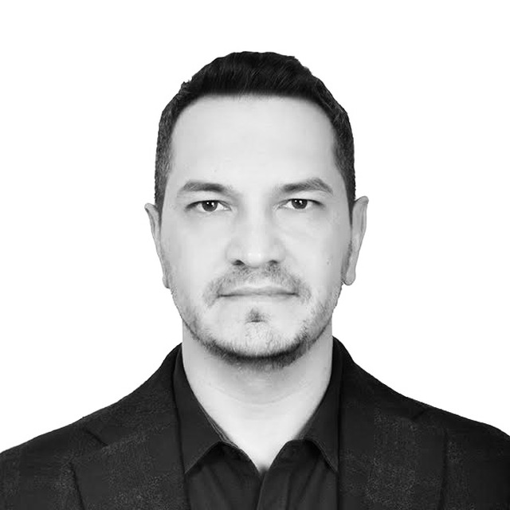

People
A small lab: one faculty director, graduate students, and undergraduate research assistants who do real parts of real studies.
Director

Ferhat Karaman, PhD
Lab Director and Principal Investigator
Ferhat is an Assistant Professor of Psychology and the Psychology Graduate Coordinator at Texas A&M University–Kingsville. His research asks how learners find structure in language — how infants and adults segment words from fluent speech, what memory does with those words afterwards, and why learners differ so much in what they take away from the same input. He works with collaborators at Lancaster, UCLA, the University of Tennessee and Clarkson, and teaches statistics, research methods and the biological bases of behavior.
Before Kingsville he completed his PhD at the University of Tennessee, Knoxville. He speaks Turkish and English.
- PhD, Experimental Psychology — University of Tennessee, Knoxville, 2018
- MA, Experimental Psychology — University of Tennessee, Knoxville, 2016
- MA, Experimental Psychology — Florida Atlantic University, 2013
Graduate students
-
Julie Cisneros
Graduate student, MA in Psychology
Julie joined the lab in 2026.
Undergraduate researchers
-
Laura Carson
Undergraduate researcher and McNair Scholar
Laura is a McNair Scholar working on an independent research project in the lab, from the proposal through data collection.
Collaborators
- Jill LanyLancaster University
- Jessica F. HayUniversity of Tennessee, Knoxville
- Megha SundaraUniversity of California, Los Angeles
- Hironori KatsudaUniversity of California, Los Angeles
- Aylin ÖzdeşClarkson University
- Nuray KaramanTexas A&M University–Corpus Christi
Alumni
Students who have finished their time in the lab will be listed here, with where they went next.
There is room for you here
Undergraduate and graduate students join the lab every semester.